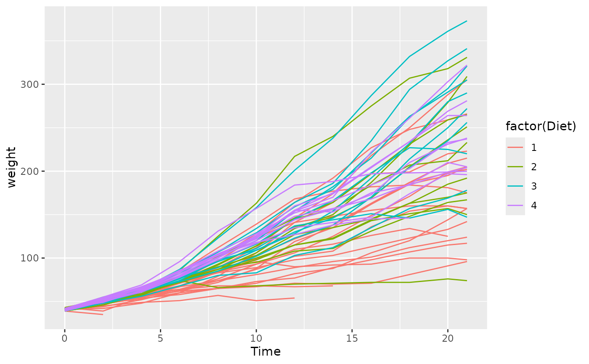
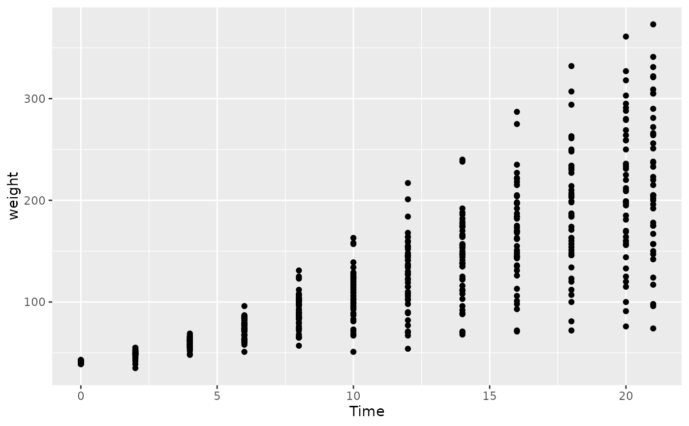
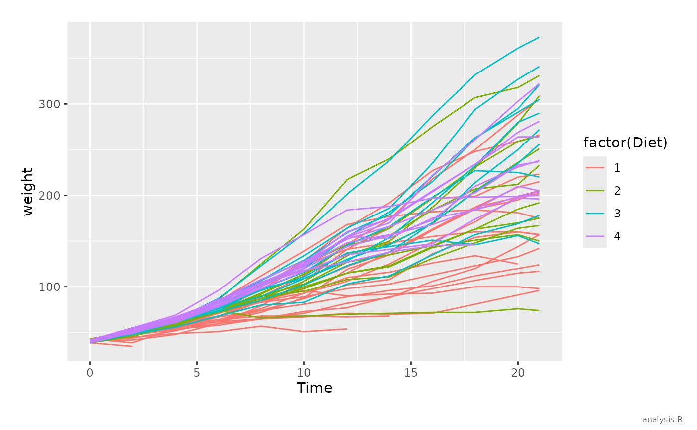

Export ggplot plots (and related objects) to files with stamping support
Source:R/ggwrite.R
ggwrite.RdWrites ggplot plots, gtable objects, or lists thereof to PNG or PDF
files with optional stamping (caption with script name, timestamp, and model information).
Supports flexible canvas sizing, multiple output formats, and both single-file and
multi-file output for lists of plots.
Usage
ggwrite(
plot,
file,
canvas = NULL,
formats,
onefile = FALSE,
res = 200,
paper = "special",
save = TRUE,
show = !save,
use.names = FALSE,
subdir = NULL,
script,
time,
model,
name.all.pdf,
quiet = FALSE,
path.format = NULL,
method.png = c("ragg", "png"),
stamp.format = NULL,
stamp.funs = NULL,
useNames,
fun.path = NULL
)Arguments
- plot
A plot object or a list of plot objects. Normally generated with
ggplotorqplot. Can also begtableobjects fromgrid.arrangeorarrangeGrob. Support forgtableis experimental.- file
Character string specifying the output file path. Must end in
.pngor.pdf. If missing andsave = TRUE, an error is raised. If missing andsave = FALSE, the plot is shown on screen instead. For lists of plots, seeonefilefor naming behavior.- canvas
Either a list with
heightandwidthelements (in inches), or a character string shortname of a predefined canvas size. Default is"standard". SeecanvasSizefor available sizes and custom size specification. Multiple canvas sizes can be specified as a named list to generate outputs at different sizes.- formats
Character vector specifying file format(s) to write. Must be a subset of
c("png", "pdf"). Default is to use the format matching thefileextension. Multiple formats can be specified to write the same plot in different formats.- onefile
Logical. Only applicable if
plotis a list. IfTRUE, all plots are written to a single multi-page PDF (filemust end in.pdf). IfFALSE, numbered files are created - one per list element. Default isFALSE.- res
Numeric. Resolution in pixels per inch for PNG output. Default is 200. Passed to
png.- paper
Character string specifying paper type. Only used with PDF device. Default is
"special". Seepdffor options.- save
Logical. Should the plot be saved to file? Default is
TRUE. Set toFALSEto only display the plot without saving. Useful when controlled by a flag variable (e.g.,save = writeOutputs).- show
Logical. Should the plot be displayed on screen? Default is the opposite of
save(i.e.,!save). Setting bothsave = TRUEandshow = TRUEin knitr documents can display the plot in the rendered document while also saving high-quality files.- use.names
Logical. If
length(plot) > 1, shouldnames(plot)be used in the output file names? Default isFALSE, which uses numeric indices (1, 2, 3, ...). Only used ifsave = TRUEandplotis a list.- subdir
Character string specifying a subdirectory within the path structure. This is passed to the path function generated from
path.format. Default isNULL.- script
Character string or path to the script file. If provided, a stamp (caption) will be added to the plot showing the script name, timestamp, and optionally the model. Requires
ggplot2>= 2.2.1.- time
Character string or POSIXct timestamp. By default, a timestamp is included if
scriptis provided. You can pass a custom time string or usetime = ""to omit the timestamp.- model
Character string or model object specifying the model name/identifier. Used for stamping and for organizing output directories via
fun.path.- name.all.pdf
Character string specifying the filename to use when writing all plots to a single PDF file (when
onefile = TRUE). Only used whenfile = "". Default is"all.pdf".- quiet
Logical. If
TRUE, suppresses messages about files being written. Default isFALSE.- path.format
Character string or function defining the output path. A template using
%model,%script, and%nameplaceholders, or a function as returned bypathFormat. Passed topathFormat. Default (NULL) usesfileas is.- method.png
Character string, one of
"png"or"ragg", controlling which graphics device is used for PNG output."png"uses the basepngdevice;"ragg"usesagg_png, which produces output that renders more consistently across platforms (recommended for reproducible/snapshot-tested figures). Default is"png".- stamp.format
A template for the stamp text using the placeholders
%script,%time,%model, and%file, with"\n"for line breaks. Default is"%script\n%time %model %file". SeecreateStamp.- stamp.funs
Optional named list of functions (elements
script,time,model,file) used to preprocess the values before they are inserted intostamp.format. SeecreateStamp.- useNames
Deprecated. Use
use.namesinstead.- fun.path
Deprecated. Use
path.format.
Value
Returns NULL invisibly. Files are written as a side effect.
If show = TRUE, plots are also displayed.
Details
The function handles both single plot objects and lists of plots with flexible output options:
Single plots:
Written to
filewith specified format(s)Can generate multiple formats simultaneously
Can generate multiple canvas sizes simultaneously
Lists of plots:
If
onefile = TRUE: creates a single multi-page PDFIf
onefile = FALSE: creates separate files (numbered or named)Automatic naming based on list element names or indices
Canvas Sizes
Predefined canvas sizes (see canvasSize):
"standard": 7.2 × 5.4 inches"wide": 9.6 × 5.4 inches"wide-screen": 18.6 × 9 inches"square": 5.4 × 5.4 inches"A4": 5.4 × 7.2 inches"letter": 6.5 × 9 inches
Custom sizes can be specified as list(width = w, height = h) where
w and h are in inches.
Stamping
When script is provided, a caption is added to the plot using
ggstamp. The stamp typically includes:
Script file name
Timestamp (unless
time = "")Model identifier (if
modelis provided)
The stamp is added as a ggplot2 caption and will appear at the bottom of the plot.
Trace Attributes
If plot has traceit attributes (added via traceit), those
attributes will be automatically extracted and used, unless explicitly overridden
by arguments passed to ggwrite.
See also
ggstamp for adding stamps to plots,
canvasSize for canvas size options,
writer for a unified interface to write various object types,
pathFormat for organizing output directories,
traceit for adding traceit attributes,
png, pdf for graphics devices
Other Plotting:
canvasSize(),
ggstamp(),
ggwater()
Examples
library(ggplot2)
writeOutput <- FALSE
data(ChickWeight)
p1 <- ggplot(ChickWeight, aes(Time, weight, group = Chick, colour = factor(Diet))) +
geom_line()
# View plot on screen
ggwrite(p1)
 # Save plot with stamping
script <- "analysis.R"
ggwrite(p1, script = script, canvas = "wide",
file = "myplot1.png", save = writeOutput)
# Save plot with stamping
script <- "analysis.R"
ggwrite(p1, script = script, canvas = "wide",
file = "myplot1.png", save = writeOutput)
 # Save in multiple formats
ggwrite(p1, file = "myplot1.png",
formats = c("png", "pdf"),
save = writeOutput)
# Save in multiple formats
ggwrite(p1, file = "myplot1.png",
formats = c("png", "pdf"),
save = writeOutput)
 # Multiple canvas sizes
ggwrite(p1, file = "myplot1.png",
canvas = list(small = "standard", large = "wide"),
save = writeOutput)
# Multiple canvas sizes
ggwrite(p1, file = "myplot1.png",
canvas = list(small = "standard", large = "wide"),
save = writeOutput)

# Creates: myplot1_small.png, myplot1_large.png
# List of plots to separate files
p2 <- ggplot(ChickWeight, aes(Time, weight)) + geom_point()
plots <- list(lines = p1, points = p2)
ggwrite(plots, file = "chickweight.png",
use.names = TRUE, save = writeOutput)

 # Creates: chickweight_lines.png, chickweight_points.png
# List of plots to single PDF
ggwrite(plots, file = "chickweight.pdf",
onefile = TRUE, save = writeOutput)
# Creates: chickweight_lines.png, chickweight_points.png
# List of plots to single PDF
ggwrite(plots, file = "chickweight.pdf",
onefile = TRUE, save = writeOutput)


# Creates: chickweight.pdf (2 pages)
# Organize output using a %script-based directory structure
ggwrite(p1, file = "chickweight_lines.png",
script = script, path.format = "%script/%name",
save = writeOutput)

# Creates: analysis/chickweight_lines.png